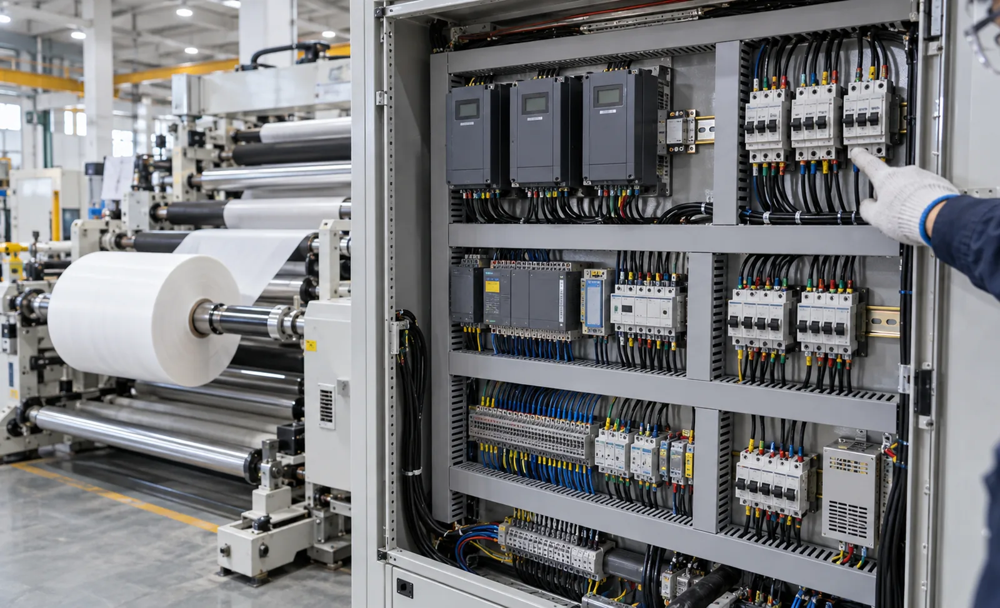
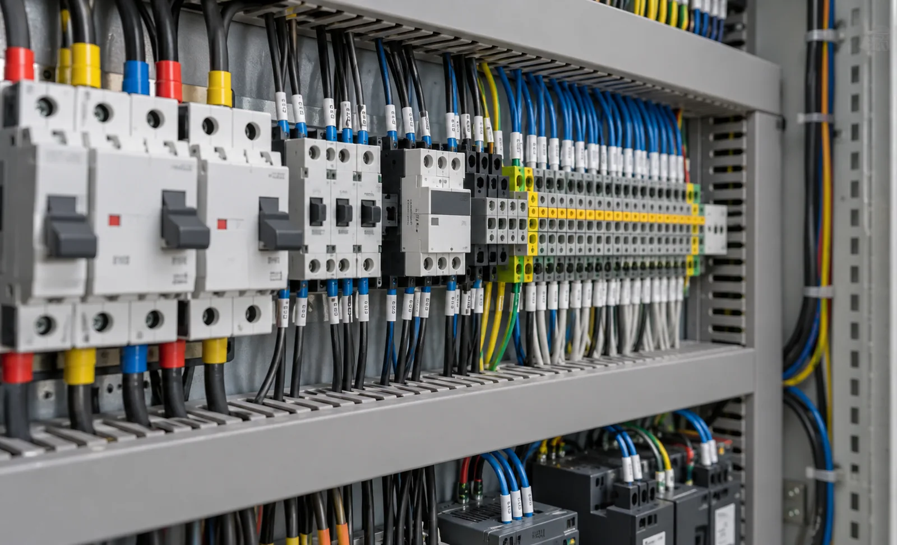

Published September 24, 2026 | By HDPTH Technical Editorial Team

Buyers compare slitter rewinders on speed, width and price, then discover at installation that the electrical cabinet is the hardest part to legalise. Inspectors, insurers and utilities ask for evidence the panel was built to recognised rules — and evidence cannot be created after the machine ships. Deciding the electrical compliance route before signing the order is one of the cheapest risk decisions on a converting line purchase.
IEC 60204-1: the European route
IEC 60204-1 governs the electrical equipment of machines: supply disconnects, protective bonding, conductor sizing and colour, overcurrent protection, stop and emergency stop functions, and enclosure markings. Within the EU it works as a harmonised standard under the Machinery Directive and its successor regulation, giving a strong presumption of legal compliance for the electrical part. A European buyer should expect:
- Declaration of Incorporation or Conformity naming the directives applied and standards used, including 60204-1.
- Risk assessment under ISO 12100 covering the machine, not a one-page statement.
- Electrical documentation — schematics, terminal schedules, cable and voltage lists.
- Enclosure marking with rated supply voltage, frequency, short-circuit current and the bonding scheme.
- CE marking on the nameplate, backed by a technical file the supplier can produce on request.
Check that documentation matches hardware. A schematic that shows one brand of drive while the cabinet holds another signals a file copied from a previous project — and it will not survive a serious inspection.
UL 508A and CSA: the North American routes
The United States approaches panels differently. UL 508A is the standard for industrial control panels, and the practical route is buying from — or being authorised as — a UL 508A panel shop, which applies the UL Listing mark for the panel. Where a listed panel is not available, an accredited body performs a field evaluation and labels the machine as examined. Canadian installations add their own layer: CSA certification or an accepted field evaluation label. Inspectors and insurers look for exactly these marks. A North American buyer should contract for:
- A UL 508A panel label or listing report, or a named field-evaluation arrangement with an accredited body.
- Listed or recognised components — drives, power supplies, contactors, terminals — as installed, with approval records.
- Schematics matching the panel and wiring practice per UL rules, including conductor colour and spacing.
- Canadian acceptance if the machine ships to Canada: CSA evidence or the appropriate evaluation label.
- Contract clarity on who arranges and pays for any field evaluation, often the largest hidden cost.
Why the two systems are not interchangeable
The schemes differ in wiring rules, conductor colours, component approvals, overcurrent protection and markings. IEC-approved components are not automatically UL-listed; a UL 508A panel does not by itself create an EU conformity file; and an inspector in either market will not accept the other’s paperwork. Machines serving both regions need an explicit decision: a dual-approvable cabinet with documented deviations, or two panel variants shipped per destination. That costs engineering attention up front and far more to retrofit.
Electrical compliance also ties into the wider machine file: emergency stops, guarding interlocks and safe-stop functions belong to the same assessment. See our guides on machine safety and guarding and the factory acceptance test checklist.
| Aspect | Europe (IEC 60204-1) | North America (UL 508A / CSA) |
|---|---|---|
| Governing scheme | Harmonised standard under the Machinery Directive/Regulation, CE route | Panel listing by authorised UL 508A shop; CSA certification for Canada; field evaluation as fallback |
| Key document | Declaration of Incorporation/Conformity plus risk assessment (ISO 12100) | Panel listing report or label; field-evaluation report and label |
| Components | Approvals per IEC/EN product standards | UL Listed or Recognised components as used in the panel |
| Markings | CE marking, rated supply data, short-circuit rating, bonding scheme | UL Listing mark for the panel; CSA mark or field label for Canada |
| Buyer’s leverage | Demand full electrical documentation and matching technical file | Contract who arranges and pays for listing or field evaluation before order |

Shipping to a specific market?
Tell HDPTH the destination country, supply voltage and inspection requirements. We build the electrical system to the applicable scheme — IEC 60204-1, UL 508A or CSA — and quote it with the machine, documentation included.
Submit Your Project InquiryFrequently asked questions
What is IEC 60204-1 and why does it matter when buying a slitter rewinder for Europe?
IEC 60204-1 is the standard for the electrical equipment of machines and a harmonised standard under the EU Machinery Directive and Machinery Regulation, so building the cabinet and wiring to it gives a recognised route to CE compliance. The supplier should state which edition was applied, provide a wiring documentation set — schematics, terminal and component schedules, conductor and voltage lists — and mark the enclosure with rated supply data, short-circuit withstand and the bonding scheme.
What is UL 508A and when does a North American buyer need it?
UL 508A is the US standard for industrial control panels. A panel built and labelled by an authorised UL 508A panel shop carries a UL Listing mark that inspectors and authorities recognise. Machines for the US market usually need a listed panel or a field evaluation from an accredited body before connection. Canadian installations need CSA acceptance — a CSA-certified panel or a field evaluation labelled for Canada.
Which documents should a European buyer receive with the machine?
The core set is the EU Declaration of Incorporation or Conformity as applicable, a risk assessment under ISO 12100, the wiring diagrams and electrical documentation required by IEC 60204-1, instruction manuals in the languages of use, and CE marking on the nameplate with rated electrical data. The documentation must match the machine delivered — check that component brands and panel layout in the drawings agree with the cabinet.
Which documents should a North American buyer receive?
A UL 508A panel shop label or listing report, or a field-evaluation report and label from an accredited body such as CSA or Intertek; documentation of listed and recognised components as used in the panel; wiring schematics consistent with the panel; and for Canada, CSA certification evidence or an accepted field evaluation label. Agree in the contract who arranges any field evaluation and who bears its cost.
Are IEC and UL cabinet designs interchangeable?
No. They differ in wiring practice, colours, component approvals, overcurrent protection and markings. A cabinet built to IEC 60204-1 will not automatically pass a UL or CSA inspection, and a UL 508A panel does not satisfy the EU route by itself. Machines for both markets need an up-front decision: a dual-approvable design with listed components and documented deviations, or two panel variants. State the destination market and supply voltage at order time, not at installation.
Sources
- IEC: International Electrotechnical Commission — IEC 60204-1 electrical equipment of machines
- UL Solutions: UL 508A standard for industrial control panels and panel shop programme
- CSA Group: Canadian electrical certification and field evaluation services
- ISO 12100: risk assessment and risk reduction for machinery
- European Commission: CE marking requirements